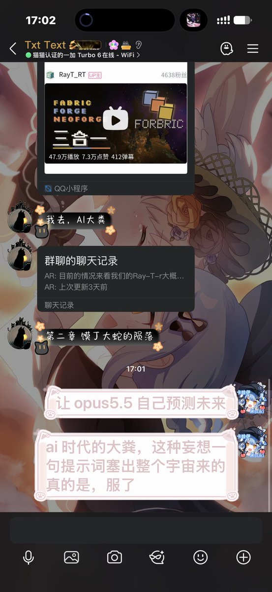

雪泠酱🍥🏳️⚧️
@mrsksyrx_xl
@Chiyuyu520 想不到这个三合一存在的意义
信雅互联是干嘛用的😅

池鱼鱼🍥
@Chiyuyu520
我现在想起来老一辈搓网站都是各种跑兼容测试灯塔测试看看自己网站哪里还可以优化
图片压缩的够不够小，够不够清晰
现在直接一个 AI 一句话制作一个头图 4K 原图 12MB 不加载完不能进主页
感叹时代，感叹命运 https://t.co/Bb8mQSMTHc